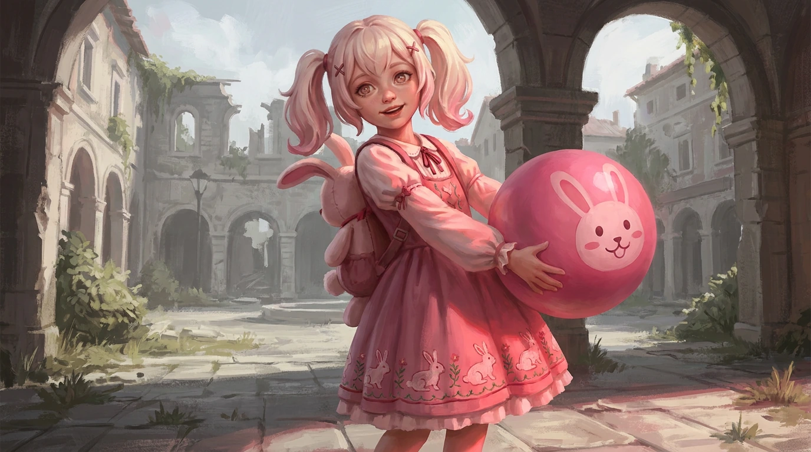

Passive
You're It!
Abilities mark a target as It.
Tavi gains movement speed toward It.
Her next basic attack against It consumes the mark for bonus magic damage and partial cooldown restoration.

Tavi formed from generations of repeated children's games in Merrin.
She is not stupid, and she is not cruel. That is what makes her dangerous. Somewhere in the memories she formed from, a child was taught a rule, and Tavi learned it with everything else:
She no longer applies it. Not because she rejected it — she has simply concluded that everyone is playing, they just have not realised yet. Running is a move. Hiding is a move. Begging is a move she has not seen often enough to recognise, so she treats it as part of the game and waits, delighted, for the next one.
Surrender is not a move. It cannot be, because the game does not have an ending where someone asks to stop.
A young girl with cream-blonde twin tails streaked pink and clipped with bunny charms, caught mid-lunge with one hand thrown out toward the viewer and her whole face open in a wide, delighted grin. Her pupils are pink and cross-shaped. She wears a black jacket trimmed pink and hung with plush bunny charms, pink-and-white patterned shorts, bandaging on one forearm, wrist cuffs, knee pads and chunky black-and-pink boots with bunny faces on the toes. Her ball is pink, black and white with a bunny face whose eyes are crosses, trailing ribbons of pink light. The cross is her mark and it is everywhere — two of them drawn on her bare thigh, stitched across her shorts, painted on her ball, stamped on the face of every plush charm she wears, and hung through the ruins behind her on cross-eyed bunny banners. That is the It mark from her passive, left on the world the way a child chalks a wall. Merrin has been overtaken by her game: a giant stone bunny looms among the ruined spires, bunny-faced banners hang from the arches, and pink blossom is coming up through the broken stonework and drifting through the air. Everything is sunlit: blue sky, ivy, wildflowers, bright open daylight. Keep her brightly and evenly lit with her face fully visible and her expression pure uncomplicated delight — never shadowed, never framed as a threat, never posed menacingly. She is a child having a wonderful time, and the horror belongs entirely to what that means for whoever she is playing with.
Abilities mark a target as It.
Tavi gains movement speed toward It.
Her next basic attack against It consumes the mark for bonus magic damage and partial cooldown restoration.
Throw a magical ball projectile.
If it hits It, the ball can return. Catching the return reduces cooldown.
Tavi briefly enters Invisibility and leaves an illusion behind.
Recast or reveal creates burst behavior.
If It attacks the illusion, the illusion bursts and slows.
Dash through a target.
Interacts with You're It! and can gain a recast against the marked target.
Tavi briefly disappears.
Recently damaged enemies become eligible Playmates.
Choose one and reappear beside them for heavy missing-Health magic damage.
Docs/Design/Vanguards/06-tavi.yaml.
Narrative and abilities: Veyra_Initial_Roster_Character_Bible_v0.6.md §6.
Generated by render_sheet.py.